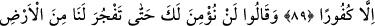
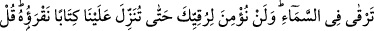
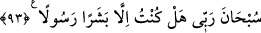

KUR’AN’DA HER TÜRLÜ
MİSÂLİ ANLATTIK
89. Andolsun ki biz, bu Kur’an’da insanlara her türlü misali çeşitli şekillerde
anlattık. Yine de insanların çoğu inkârcılıktan başkasını kabullenmediler.
90. Onlar: “Sen, dediler, bizim için yerden bir kaynak fışkırtmadıkça sana asla
inanmayacağız.”
91. “Veya senin bir hurma bahçen ve üzüm bağın olmalı; öyle ki, içlerinden gürül
gürül ırmaklar akıtmalısın.”
92. “Yahut, iddiâ ettiğin gibi, üzerimize gökten parçalar yağdırmalısın veya
Allah’ı ve melekleri gözümüzün önüne getirmelisin.”
93. “Yahut da altından bir evin olmalı, ya da göğe çıkmalısın. Bize, okuyacağımız
bir kitap indirmediğin sürece (göğe) çıktığına da asla inanmayız.” De ki: Rabbimi
tenzih ederim. Ben, sadece beşer bir elçiyim.
“Andolsun ki biz” üstün sıfatları hâiz “bu Kur’an’da insanlara” nefislerin hüsn-i
kabûl göstermeleri için ilginçlik, güzellik ve gönüller üzerinde tesir etmede mesel kabul
edilecek eşsiz mânâlardan “her türlü misali çeşitli şekillerde anlattık” Yâni Allah’a
yemin olsun ki iyice pekiştirmesini, anlamının daha iyi anlaşılmasını ve kalblerde daha
iyi yer etmesini te’min edecek muhtelif şekillerde defaatle ifâde ettik ve tekrarladık.
“Yine de insanların çoğu inkârcılıktan başkasını kabullenmediler” Hakkı inkâr ve
kabul etmeme üzerinde direndiler.
Âyetten çıkarılması gereken bazı sonuçlar vardır. Bunlardan biri şudur: Kur’an-ı
Azîm nimetlerin en kıymetlisi ve en yücesidir. Bu sebeple her âlim ve her hâfız iş işten
geçmeden bu nimetin şükrünü edâ etmeli ve Kur’an’ın hukukunu edâya riâyet etmelidir.
İbn Mes’ûd (r.a.)’dan şöyle rivâyet edilmiştir: “Dininizden ilk kaybedeceğiniz şey